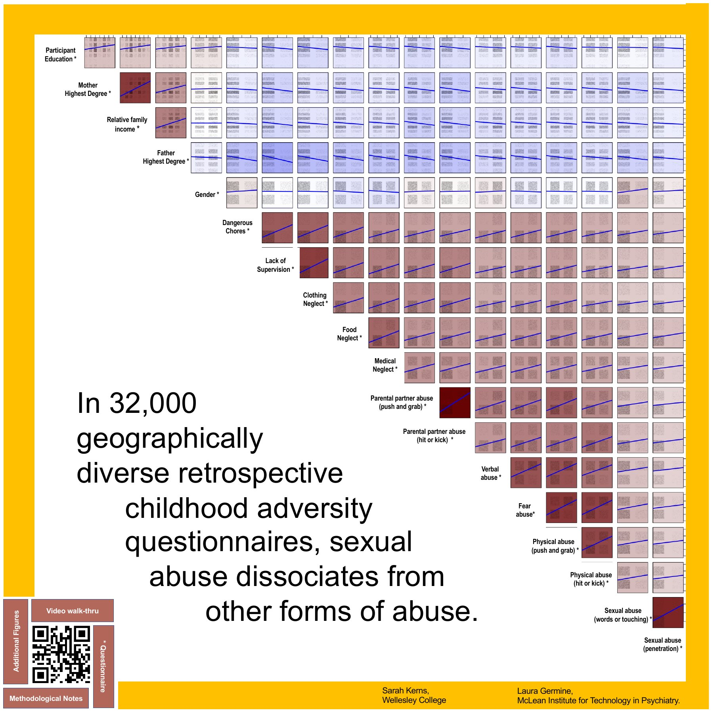

Kerns, S. H., & Germine, L. (2022, November). Exploring the childhood trauma monolith: A large-scale multivariate analysis of childhood adversity. Poster, International Society for Traumatic Stress Studies (ISTSS) Annual Meeting, Atlanta, GA.
Abstract
Childhood abuse has strong, and documented, effects on cognition, development, and adult mental health, yet its several types are often reduced to a single entity. Here we use large-scale multivariate correlation and visualization to expand our understanding of the childhood trauma monolith by exploring patterns in trauma exposure. Administered to 35,000 adults over a period of 10 years, our retrospective childhood adversity questionnaire gathered details regarding education, home culture, and 25 forms of traumatic exposure during childhood. We observed that different types of childhood abuse (such as verbal, physical, sexual, neglect, and witnessed abuse) exhibit within-type consistency and correlate similarly with SES. Cross-type comparisons, however, reveal a dissociation of sexual abuse from the other types. Our findings imply that sexual abuse perpetrators are largely distinct, which may hold implications for mechanisms, effects, and interventions in both the criminal and clinical spheres.
ISTSS 2022 abstract #1347358

Link: extra graphs and info Full-size image ← Adversity, Social, and Legal Psych